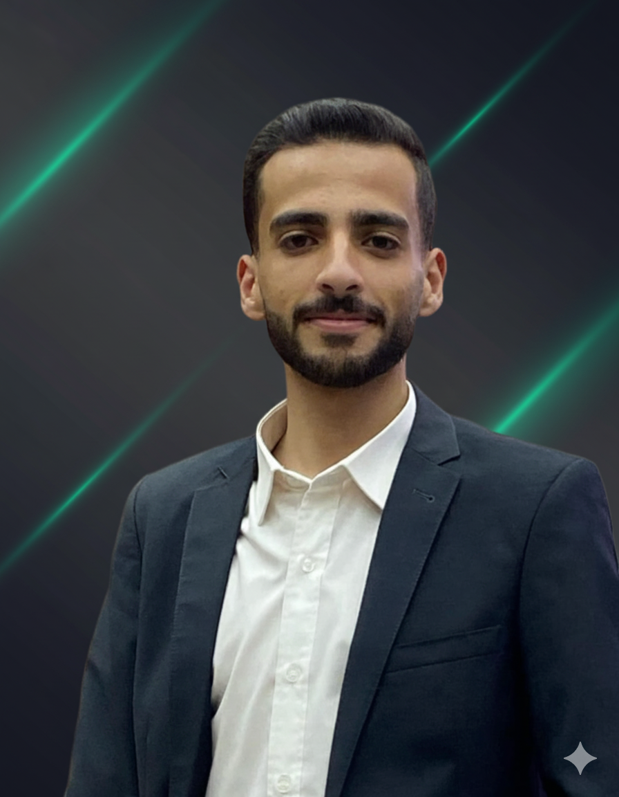

Loading Portfolio...
Data Scientist & AI Engineer
Passionate about leveraging cutting-edge AI and machine learning technologies to solve real-world problems. Currently pursuing excellence in Data Science at JUST with a focus on NLP and Deep Learning.

GPA: 4.07/4.00
🏆 Top 2% of Cohort
Dedicated to pushing the boundaries of AI and Data Science
As a 4th-year Data Science student at Jordan University of Science and Technology (JUST), I've maintained a GPA of 4.07/4.00, placing me in the top 2% of my cohort. My academic journey has been driven by a deep passion for leveraging data to address real-world challenges, specializing in AI, Deep Learning, NLP, Big Data, and Computer Vision.
Expertise across the full spectrum of AI and Data Science technologies
Building real-world AI systems that drive business impact
Contributing to the scientific community through rigorous empirical work
Classified nearly one million Arabic medical questions from Altibbi into 90 disease categories. Handled data cleaning, normalization, dialect handling, and mixed-language preprocessing (Arabic + English medical terminology). Developed ModernBERT-based classifiers achieving competitive performance despite large class count.
Complete spatiotemporal analysis of wildfires, weather patterns, and PM2.5 air quality in Ontario. Contributions include multi-source dataset merging, geospatial alignment, feature engineering, and ML models (Random Forest, XGBoost, SARIMAX–XGBoost hybrids). Applied SHAP explainability and anomaly detection, built interactive visual dashboards for environmental monitoring.
Models across languages and dialects, including low-resource languages like Arabic. Cross-lingual understanding and cultural grounding.
Reducing model hallucinations via multilingual grounding, cross-lingual calibration, and linguistic sensitivity. Making LLM outputs factual and culturally accurate.
Detecting sensitive or biased content in multilingual settings. Model-agnostic techniques that reduce harmful outputs and support human oversight.
Building high-quality multilingual datasets with multiple dialects, medical terminology, and noisy user-generated text for classification, generation, and content moderation.
Showcasing innovation in AI and Data Science through real-world applications
AI assistant for Jordanian citizens and DLS inquiries
AI assistant launched by Eyad Al-Naimi and Naser Diabat to help Jordanian citizens with inquiries about the Department of Land and Survey. Implemented Agentic RAG with prompt-engineered queries for enhanced accuracy and user experience.
AI-powered career discovery platform
Built an AI-powered platform automating career discovery and personal development. Utilized CrewAI multi-agent systems and n8n workflows for automation and content ranking. Features daily job matches, resume feedback, mock interviews, and skill-building resources.
Advanced NLP for Arabic text processing
Implemented Aspect-Based Sentiment Analysis for Arabic food reviews using ModernBERT with a three-step pipeline: Aspect Term Extraction, Category Detection, and Sentiment Classification.
Parameter-efficient model optimization
Fine-tuned Mistral-7B model using QLoRA on symbolic instruction dataset. Evaluated with F1, ROUGE-L, and BERTScore, achieving significant post-training improvement with minimal computational resources.
Socioeconomic & mental health analysis
Applied statistical testing to identify significant correlations between socioeconomic factors and mental wellbeing indicators. Segmented 1,000+ participants into distinct psychological and behavioral risk profiles using unsupervised ML.
Custom implementation without frameworks
Built a multilayer feedforward neural network using only NumPy. Implemented forward propagation, backpropagation, and gradient descent manually with MSE and R² evaluation metrics.
Multiple LSTM architectures comparison
Developed and compared LSTM, BiLSTM, and Multi-layer LSTM architectures for sentiment classification on IMDb dataset, with comprehensive performance analysis and visualization.
End-to-end ML pipeline for business insights
Built comprehensive ML pipeline for customer churn prediction with data cleaning, EDA, feature engineering, and multiple classifier comparisons to support retention strategies.
Recognition for excellence in AI innovation and competition
Uni Agent Hackathon 2025 — Recognized for outstanding integration and creative application of AI tools in a competitive university-level hackathon environment.
Uni Agent Hackathon 2025 — Achieved 2nd place overall among competing teams, demonstrating exceptional technical skill and problem-solving under pressure.
Jordan University of Science and Technology — Consistent placement on the Dean's Honor List every semester, maintaining top 2% ranking with a 4.07/4.00 GPA.
Academic excellence and continuous learning in cutting-edge technologies
GPA: 4.07/4.00 (Top 2% of cohort)
Relevant Coursework: Machine Learning, Deep Learning, Natural Language Processing, Big Data Analytics, Computer Vision, Database Systems
Fundamentals of Azure AI services and machine learning on the cloud
Building and orchestrating multi-agent AI systems for complex tasks
Distributed training techniques for large-scale deep learning models
Comprehensive training in RAG systems and advanced retrieval techniques
Specialized training in transformer architectures and their applications in NLP
Advanced techniques in natural language processing using deep learning frameworks
Comprehensive training in big data technologies and analytics using PySpark
Enterprise cloud solutions and infrastructure management
Ready to collaborate on innovative AI projects and data science solutions
nmalmahmoud22@cit.just.edu.jo
+962 782 608 685
naser-diabat-b857232b9
NaserMohannad
Amman, Jordan
Jordan University of Science and Technology